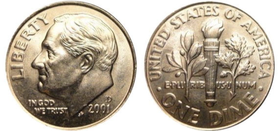
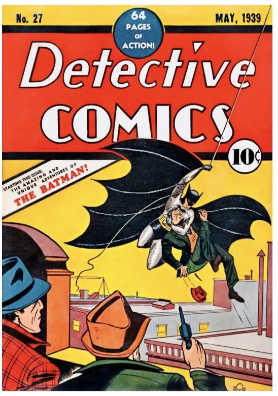
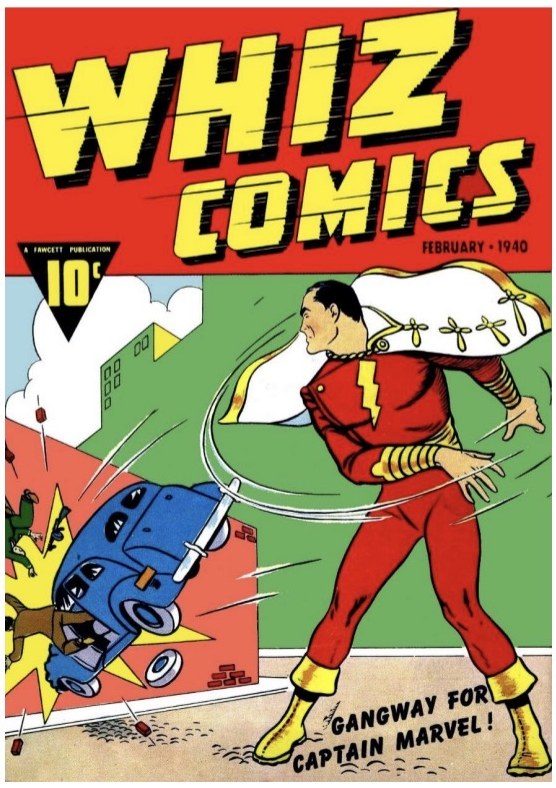
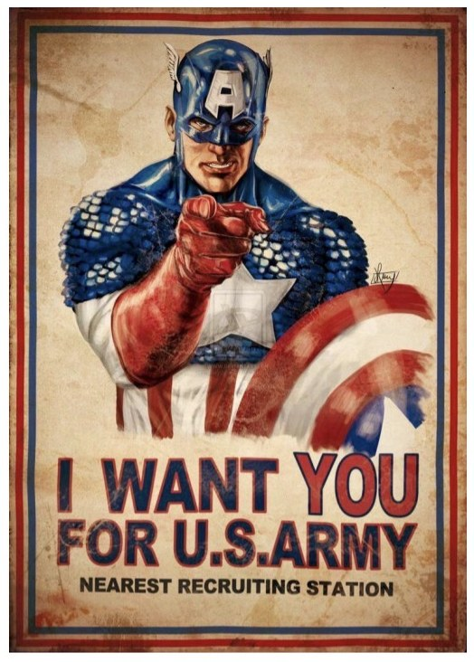
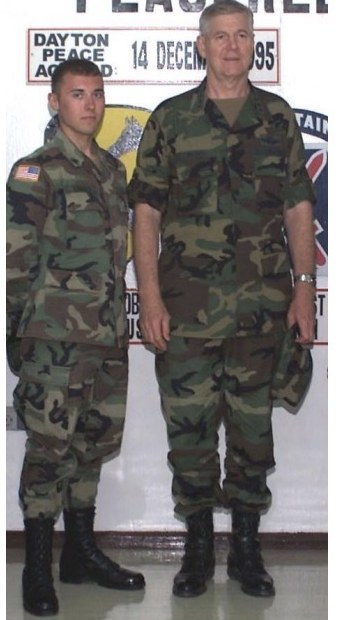
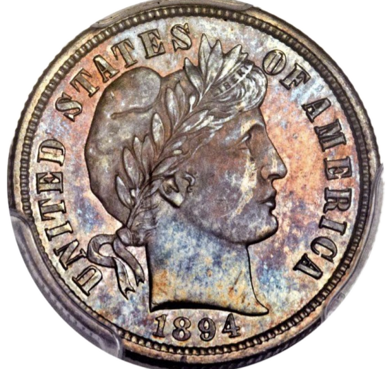

Mom, did I ever tell you everywhere I go I carry a small coin? Yes, a thin silver American dime minted in Denver, Colorado in the year 2001. The same 10-cent cost of the very first comic books of the late 1930s; with their self-contained gifted dreams of hope transcribed across pages transporting readers beyond literary verse and artistic design down pathways of endless imagination.

Storied comic tales of superheroes like the ones you used to purchase for me during weekend trips to the markets to shop for groceries for our upcoming week. But by that time, the cost of the stories had surpassed what was once bartered for with a single dime. Even with the continued hikes in prices over time, you somehow always seemed to have a couple extra dollar bills tucked away for me to pick up the latest issues; filled with tales of characters who became my closest friends, spending countless hours exploring shared adventures, defeating villains together, all while taking note of the possibilities that were offered by those far distant lands of wonder supplied by a passport of imagination. Little did we know at that time, just how much those paper-thin tales of 10-cent dreams would influence my life for years to come.

I carry this thin silver coin now as a reminder of the childhood inspiration comic stories ignited in me instilling a lifelong desire to pursue a life making the world a better place, just like the superheroes of the many fabled tales which led me to my dream of becoming a soldier. The small coin serving as a thin simple totem and reminder of a golden age harkening my curiosity back to days of a world more embraced by innocence. All the way back when society seemed to be in a more innocent state of infancy. One that sadly seems to be lost with the turning, ticking, and twisting of technology's advances. Not without mistake, but a time when real heroes fought wars against shared enemies in hopes of making the world a better place for all mankind based on a belief that we're all created equal. Stories which are no longer published on any regular basis, but exist rarely.

And with the date minted to the coin, it also serves as a subtle reminder that time is constant but not our existence as a society traveling through its passages across pages, spiraling out of harmonized verse. Time grants us a vehicle to carry out action, moving forward like the turning of pages, all the while allowing us to glance back on past pages recalling histories as memories of chapters passed. Our metaphorical "vehicle" allowing us a mechanism of transport to traverse the chapters published by the author of time. Subtlety reminding us that nothing as we know it lasts forever, except for time who exists beyond our ability to restrict it to a scheduled beginning and end. Time constantly wraps around us, embracing us at a universal level carrying us forward to unwritten pages of our unpublished chapters.

Like the timeless stories written on the pages of comics, heroes and villains are born and die as time constantly ticks forward. Offering us only with opportunities to author new chapters in the book of life, selectively making them as vividly detailed, or as plain and dark as we so choose while drafting the designs of our story. Time grants everyone an opportunity to become authors, deciding how our stories will be interpreted as life. Never knowing when our conclusion might suddenly become a surprise ending silently creeping closer residing on the very next page. Ignoring our own finite reality, we often rush to ink out scripts and plaster storyboards together at rapid pace like the frenzied brushstrokes of an unfettered artist reflecting a desire to rush the design of life like an illustration of impatience. Rarely realizing that time only requires us to grasp onto its embrace and transfer the "10-cent dreams" of our mind's eyes as scripts to the pages of our lives.
Over the course of my own story I've spent time on both sides of life's coins witnessing how often stories can unexpectedly introduce a moment in time that results in an experience leaving everlasting impact on the future direction of a story. For me, like many other Americans, that day came on September 11, 2001. The very same year this American dime was minted in Colorado. That same year, a sleeping giant was suddenly awoken from a few sudden instances. Normal everyday men and women became the heroes we'd only read about and seen in movies springing into action like they'd arrived straight off the pages of an action comic. That day the world witnessed true evil unlike we'd ever imagined or read of. That day, the story of our world was forever changed.

Everything changed following the events of 2001; global security, economies, finances, geographies, wars, technologies, education, politics, allies & enemies, heroes & villains…everything. A blissful innocence embraced by so many evaporated in just a few short moments shattering happy stories of existence. The coin flipped landing on a darker side that very few had ever witnessed. Following those evil events, and while all my high school buddies had gone off to start college, my journey took a different path. One that led me to witnessing the firsthand atrocities of ethnic cleansing in Serbian-Bosnian war zones followed by the loss of best friends on the battlefields of Iraq; all before turning 21 and being legally allowed to buy my first beer.
After 2001, technologies advanced at faster paces leading to new inventions that were once only the dreams of science fiction. Even in the middle of war and remote abandoned deserts, connecting with my family across the world was simply just a satellite phone call away. Yes, the almighty pen and paper still reigned supreme as master of communications in the war, but it was always nice to have a chance at least monthly to be put in direct communications and hear the voice of a loved one from across the world at speeds far beyond any the postal service could ever promise. What was once only the story of handheld computers and magical flying beasts told in children's fairy tales took shape as smartphones in every hand and in flight as drones dancing across skies. News became instantly breaking, alerting our attention to a constant 24-hour news cycle of ever-changing stories often before the ink had time to dry on a journalist's notes. Devices became such a connected part of almost everyone's existence as if they were required for our very existence. Touchscreens replacing printed paper pages providing instantaneous access to all the world's knowledge at our fingertips.

Yet, even with all that technological change and addictive innovation, the simple thin coin still exists, reminding us through engraved words to carry the dream of possibility on through time. Minted as a value in time and symbolic reminder that we're given an opportunity to share life's journey improving society alone or hand-in-hand with someone special. I came to learn that like the beginning of every great comic story, two people are teamed up to make it successful; a writer and an artist. One who tells the story through a language of creative vocabulary. And the other who tells the story through their visual talent and personal expression of artistic design to canvas. Without an author, an image is only a reflection of a partial story lacking any literary context. And without an artist, a reader is left to define an end-state of visual imagination through an interpretation of author-defined verse.

Such two sides of a coin represent the pursuit of collective partnership seeking the achievement of shared stories labeled as dreams. This 10-cent dream continues to remind us of the two sides of our story. And like the flip of a coin, no one knows what tomorrow holds until our story is finally published. All we can do is strive to script our story with hope that the flip of our coin lands in favor of a happily ever after ending.